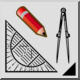
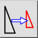
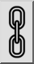

축척
도구 모음 / 아이콘:


메뉴: 수정 > 축척
바로 가기: S, Z
명령: scale | sz
설명
주어진 중심을 향해 개체의 크기를 주어진 비율로 조정합니다.
사용법
- 크기를 조정할 개체를 선택합니다.
- 이 도구를 시작합니다.
- 마우스로 크기 조정의 중심을 설정하거나 명령줄에 좌표를 입력합니다.
- 축척 비율을 입력할 수 있는 크기 조정 대화 상자가 표시됩니다. X와 Y 방향에서 두 개의 서로 다른 비율로 크기를 조정하려면 비례 크기 조정 버튼의 선택을 해제합니다:

그런 다음 X와 Y에 대해 두 개의 서로 다른 크기 조정 비율을 입력할 수 있습니다. 마우스로 선택의 크기를 조정하려면 마우스 커서 버튼을 선택합니다:
- „OK”를 클릭합니다.
- 이전에 마우스로 선택의 크기를 조정하도록 선택한 경우, 이제 크기 조정 작업의 기준점과 대상 점을 지정해야 합니다.